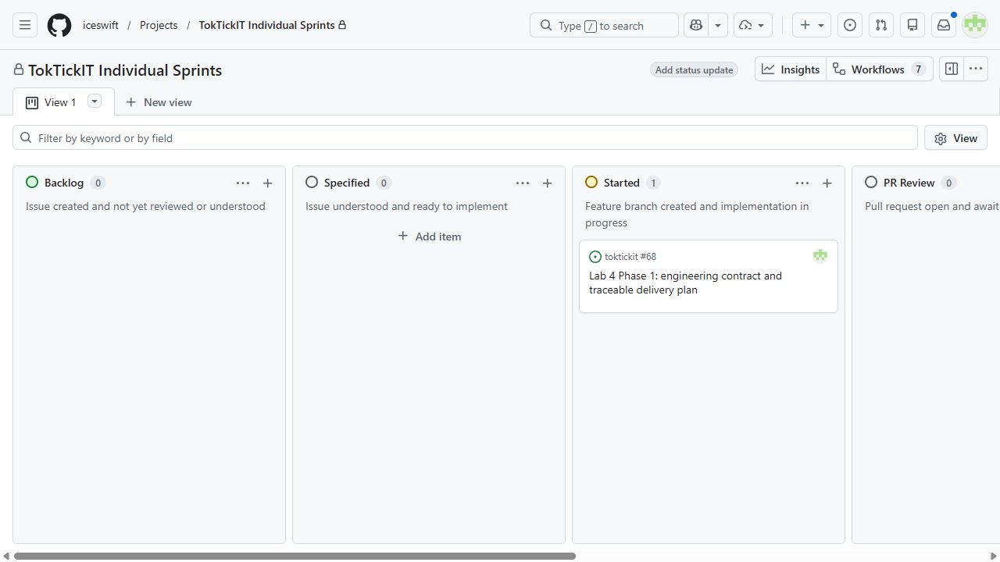

WORKING REPORT, NOT READY FOR SUBMISSION. D-01..04 student-approved 8 October 2026. Contract prepared for peer review; no Lab 4 feature or passing product test is claimed.
Baseline main: 5398f2d08659014f5e0c6245941dfeba7e44c42c. Updated 8 October 2026.
lab4-staging created from verified main. Local docs/lab4-contract checkout preserves all existing Lab 3 report edits. Issue #68 is assigned to iceswift and in Started for contract drafting. PR, approved spec chronology and final Done evidence remain pending.
Baseline record | Review register

Engineering contract: D-01..04 student-approved; numbered FR/BR/AC, Ticket/Action transitions, role matrix, exact metric predicates, migration and Product DoD prepared before code. Exact API contract and Issues/dependencies. Peer review/merge is still pending.
Planned AC/test mapping. Listed new paths are planned, not implemented. Complete passing output from final main will be incorporated only after execution.
Actual prompt register. Six to ten selected prompts and student-confirmed Lab 4 reflection remain pending.
Pending implementation and query-verified metrics, current-user Actions, drill-down and loading/empty/forbidden/failure/responsive evidence.
Pending implementation and list/create/assign/edit/transition/complete/cancel/validation/inactive-assignee/role/failure/responsive evidence, including different staff Actions on one Ticket.
Pending transitions, gate and bypass proof, stable append-only history, stale conflicts and role visibility.
Pending owned metric/query/drill-down proof and representative authentication/Tickets/attachments/comments/staff/private Notes/admin regression evidence.
UI draft/checklist. All major screens at desktop/tablet/mobile and actual keyboard/visual checks remain pending.
Continuous evidence register and eight working Phases. Final PDF page numbers and clickable page-indexed contents will be verified against actual rendered pagination, not guessed now.